Project Overview
A comparison between the aerodynamic performance of two classic British high-speed trains: the APT‑P (Advanced Passenger Train – Prototype) and APT‑E (Advanced Passenger Train – Experimental), using CFD. Both trains were developed around the 1980s with streamlined noses and a tilt mechanism, but had never previously been studied computationally due to a lack of available dimensions and drawings.
Aim: perform CFD simulations to compare the aerodynamic performance of APT‑P and APT‑E, then improve the weaker-performing train by changing its geometry.
The study progressed in three stages: validating the simulation setup against a known experimental case (the Ahmed Body), running comparative CFD on both trains to identify the weaker performer, and then making a justified design change to improve it.
Technical Approach
Validation: the Ahmed Body
Before modelling the trains, the CFD setup was validated against the Ahmed Body, a standard bluff-body benchmark for ground-vehicle aerodynamics, to check the simulation against published experimental results.
- Built the Ahmed Body geometry in SolidWorks at a 25° rear slant angle, then defined a symmetric flow region (5W × 5H × 12L) with velocity inlet, pressure outlet, slip/no-slip walls, and a symmetry plane, using the k–ω SST turbulence model at a 60 m/s inlet velocity
- Generated a y⁺ = 1 boundary-layer mesh and ran a five-case mesh convergence study, selecting the finest converged case for the final result
- Compared the resulting drag coefficient (0.2817) against the published experimental value (0.285), a 1.14% difference, and cross-checked the simulated wake vortex structure against the experimental flow visualisation
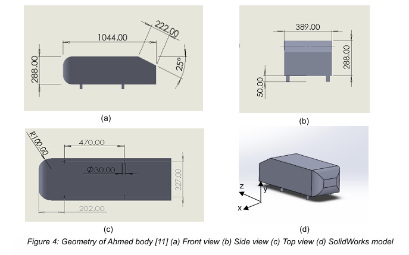
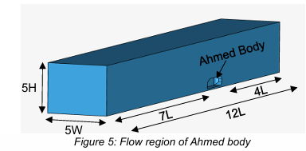
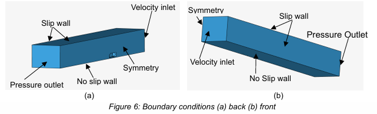
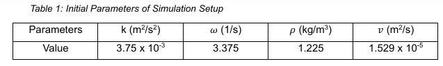
The close agreement confirmed the simulation setup, boundary conditions, and mesh strategy could be carried forward to the main train study.
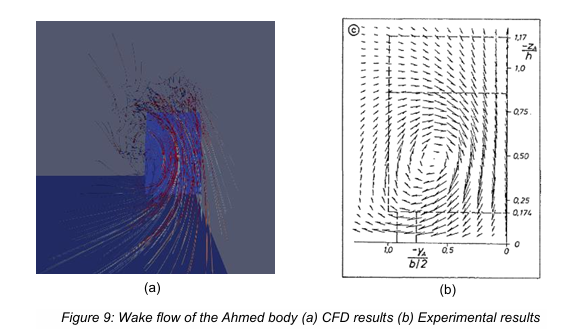
Geometry & simulation setup: APT-P and APT-E
- Reconstructed both trains in SolidWorks from available reference images, since neither train's original CAD data survived. The nose and overall profile were prioritised, wheels were simplified to cylindrical supports, and gaps between coaches and pantographs were omitted as outside the study's scope
- Built a shared flow region (5W × 5H, 3L ahead of the train) and carried the validated boundary condition setup forward, raising the inlet velocity to 65 m/s, below both trains' historical top speeds, to compare them on equal terms
- Ran a mesh convergence study for each train independently, since geometry differences meant a mesh verified for one train could not be assumed valid for the other
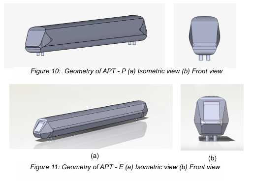
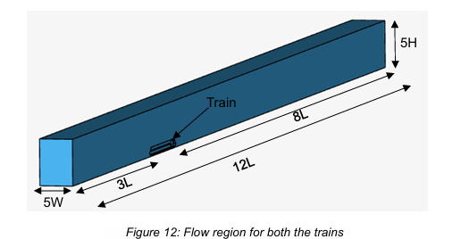
Design change: APT-P
Once APT‑P was identified as the weaker performer, a targeted geometry change was made rather than a wholesale redesign, to isolate the effect of the change.
- Diagnosed the cause: APT‑P's wide nose forced airflow to curve sharply around the edges, concentrating pressure and generating vortices, while APT‑E's narrower, converging nose let flow pass smoothly
- Reduced the nose width and shortened the transition length from the nose into the boundary-layer region, deliberately leaving the train's overall profile and identity unchanged
- Re-ran the full mesh convergence and simulation process on the updated geometry using the identical setup from the baseline study, to produce a direct like-for-like comparison
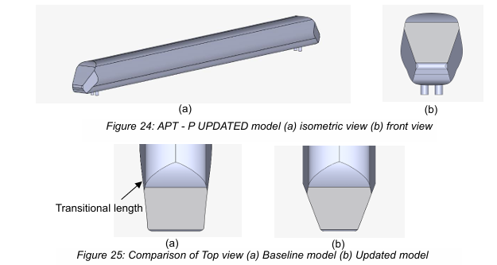
Results & Analysis
The baseline comparison showed a clear performance gap: APT‑E produced 37.74% less drag and 58.66% less lift than APT‑P, with smooth attached flow around APT‑E versus a mix of turbulent and rotational flow around APT‑P.
Force coefficients: baseline comparison
CD (drag)
APT‑P: 0.3060
APT‑E: 0.1905
CL (lift)
APT‑P: 0.2540
APT‑E: 0.1050
CM (pitching)
APT‑P: −0.1608
APT‑E: −0.0869
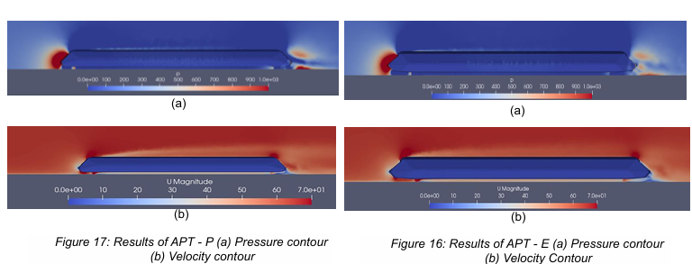
Region-by-region, the nose accounted for most of the difference: APT‑E's converging nose spread pressure across the surface and let flow pass without curving sharply, while APT‑P's wider nose concentrated pressure at the edges and forced flow to curve, seeding vortices that persisted into the boundary layer and wake. The boundary layer stabilised at roughly 6 m (APT‑E) versus 7 m (APT‑P) from the roof, and the wake took 40 m (APT‑E) versus 80–160 m (APT‑P) to settle.
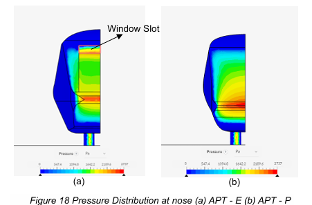
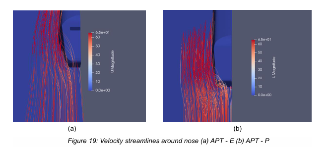
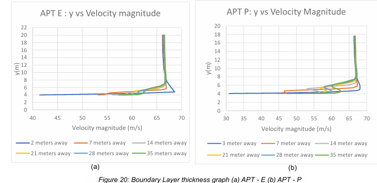
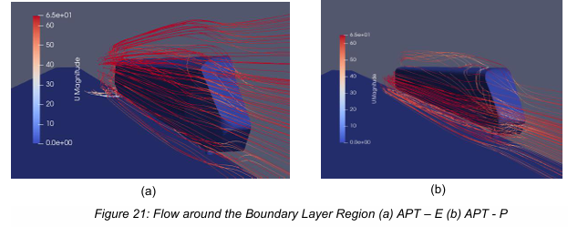
After the nose-width reduction and shortened nose-to-body transition, the updated APT‑P showed a ~31% reduction in drag coefficient (0.3060 → 0.2092) and a ~50% reduction in lift coefficient (0.2540 → 0.1263), with boundary-layer thickness at the roof reduced by ~7%. Flow around the nose curved noticeably less, and roof-vortex formation was visibly reduced, though the wake still showed a similar rotational structure to the baseline. The redesign targeted the nose and boundary layer specifically, and the wake result reflected that scope.
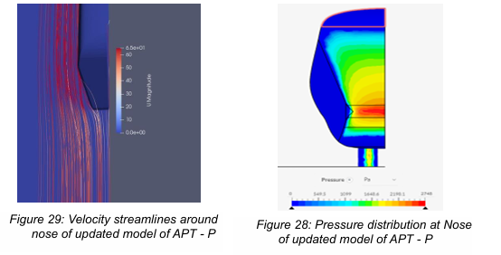
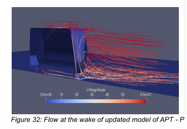
Challenges & solutions
One mesh case for APT‑P produced a solver error during the convergence study, likely from mesh non-orthogonality or aspect ratio at that resolution. Rather than discard the convergence test, a finer mesh case was substituted to confirm convergence behaviour, while a coarser, cheaper mesh case was retained for the actual result reporting, keeping the convergence evidence intact without paying for an unnecessarily expensive mesh in the final runs.
Key learnings
Geometry constructed from reference images and engineering assumptions, rather than manufacturer CAD data, carries real uncertainty, and the free-stream conditions used here don't capture tunnels, crosswind, or rain. The project's value was in isolating a clear, well-supported cause-and-effect relationship (nose geometry → pressure distribution → drag and vortex formation) and using it to justify a single, targeted design change rather than changing multiple variables at once.